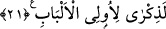

ALLAH’A YÖNELENLERE
MÜJDE
17. Tâğut’a kulluk etmekten kaçınıp, Allah’a yönelenlere müjde vardır. (Ey
Muhammed!) kullarımı müjdele.
18. Dinleyip de sözün en güzeline uyan (kullarımı). İşte Allah’ın doğru yola
ilettiği kimseler onlardır. Gerçek akıl sâhipleri de onlardır.
19. (Rasûlüm!) Hakkında azap hükmü gerçekleşmiş kimseyi ve ateşte olanı sen
mi kurtaracaksın!
20. Fakat Rablerinden sakınanlara, üstüste yapılmış, altlarından ırmaklar akan
köşkler vardır. Bu, Allah’ın verdiği sözdür. Allah, verdiği sözden caymaz.
21. Görmedin mi? Allah gökten bir su indirdi, onu yerdeki kaynaklara yerleştirdi,
sonra onunla türlü türlü renklerde ekinler yetiştiriyor. Sonra onlar kurur da sapsarı
olduklarını görürsün. Sonra da onu kuru bir kırıntı yapar. Şüphesiz bunlarda akıl
sâhipleri için bir öğüt vardır.
“
” birisinden uzak durmaktır. Biri bir şeyden uzak olduğunda “
” denir.
Tâğût, taşkınlığın (tuğyân) en ileri seviyesinde bulunan demektir. Tuğyân ise isyanda
haddi aşmak anlamındadır. Rahamût ve Azamût kelimeleri gibi mübâlağa içindir. Sanki
şeytan tuğyânın kendisi imiş gibi mübâlağa ile bu şekilde tavsif edilmiştir. Çünkü
burada kasdedilen şeytandır.
Tâğût kelimesinin sonundaki “tâ” müenneslik ifâde eden tâ olmayıp zâiddir. Nitekim